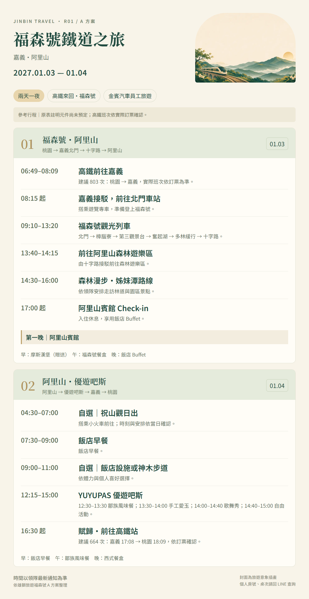

A 方案・嘉義阿里山
福森號鐵道之旅
嘉義・阿里山
高鐵往返嘉義，搭乘福森號前往阿里山，入住阿里山賓館。行程包含姊妹潭、祝山日出／神木步道及優遊吧斯。
2027.01.03 — 01.04 · 兩天一夜
查看景點攻略 ↓ JINBIN TRAVEL / R01
JINBIN TRAVEL / R01背景音效
火車鳴笛・鐵道行駛聲
開啟時鳴笛，之後每 2 分 30 秒鳴笛一次。
點一下開啟聲音，也可以安靜閱讀。行程總覽
每日行程表
依雄獅旅遊行程表整理
2027.01.03 — 01.04・兩天一夜
參考行程｜原表註明元件尚未預定；高鐵班次依實際訂票確認。

開啟完整行程圖片集合資訊
集合地點
景點介紹
景點攻略
依本次行程推薦
景點介紹與行前小提醒
祝山日出／神木步道
第二天可自選 04:30–07:00 祝山觀日出，或 09:00–11:00 飯店設施／神木步道。想追日出請備妥保暖衣物，小火車時刻以當日公告為準；日出受天候影響。
森林遊樂區官方導覽住宿介紹
住宿資訊
住宿：阿里山賓館
個人房號請回 LINE 查詢
ALISHAN HOTEL
阿里山賓館
入住阿里山森林遊樂區中的山林旅宿，認識百年檜木建築的歷史。房型、餐食與集合時間依公司安排。
查看飯店官網飯店官網僅供查閱介紹；房型、餐食、設施使用與入住安排，以公司及飯店確認資訊為準。
行前準備
行前準備清單
山上與平地體感不同，請依實際景點查詢天氣。搭高鐵前核對車次、日期、車廂與座位；不要將一般林鐵班次當成團體福森號時刻。
勾選紀錄只保留在這台裝置。
實用資訊